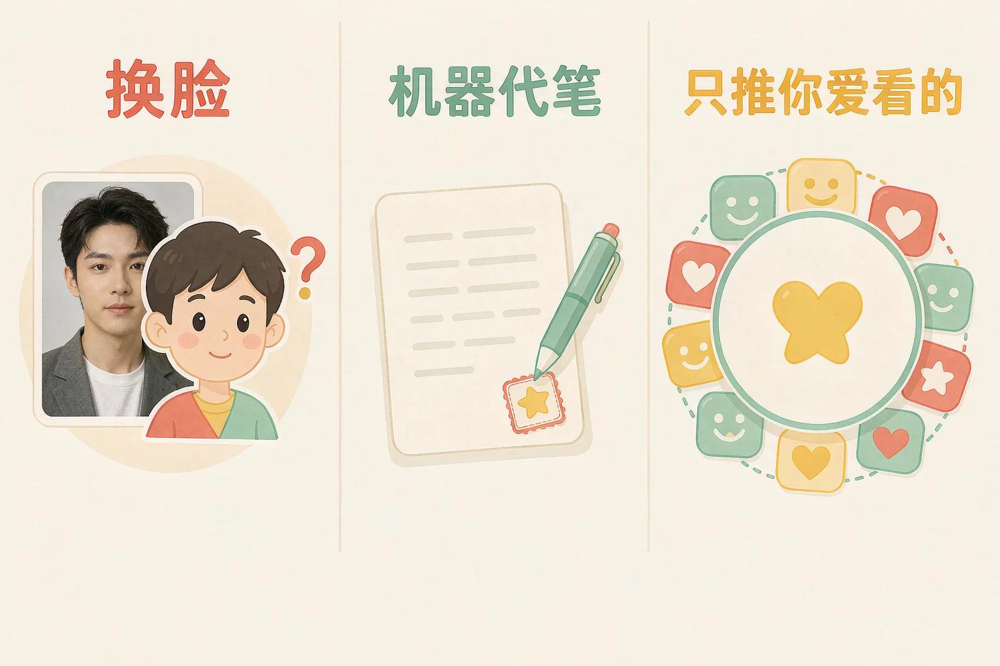
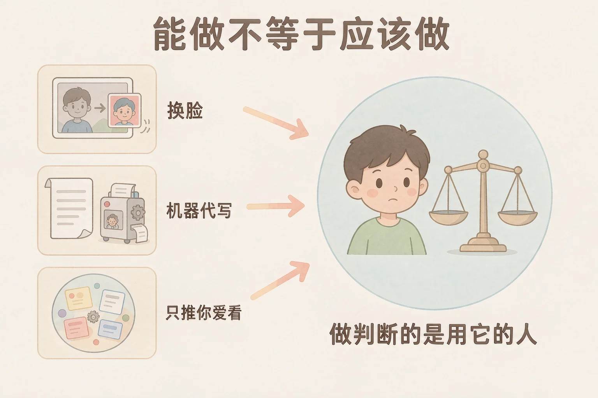
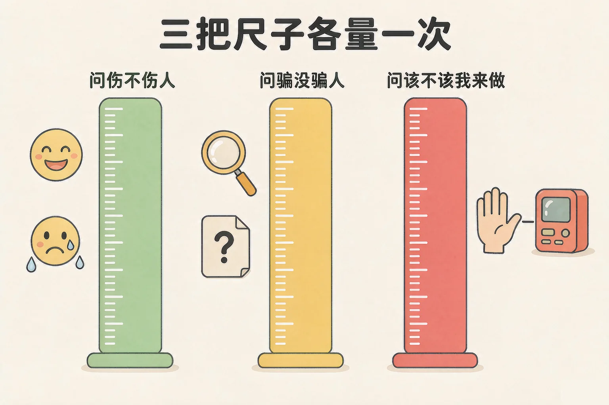

Gallery
v1.0.0 · skill v7.22.0
小学六年级 · 互联网与人工智能
这三件事里机器都没有出错，可为什么每一件都需要我们停下来想一想？

选一个你真正好奇的问题，后面的情境讨论都会围着它转。
选择或输入后，这节课会围绕你的问题展开。
先凭直觉选一个，选完立刻看到解释——错了也没关系，正好知道要重点听哪里。
1. 同学想拿班里另一位同学的照片做个搞笑表情，发到群里。下面哪种做法最妥当？
用卡通形象一样能玩得开心，而且没有人的脸被拿去用。乐趣和尊重并不冲突。错因提醒：最常见的错误是误认为「反正是开玩笑，被换的人不会介意」。你觉得是玩笑，对方可能觉得是被取笑——这件事只有他本人说了算。
2. 用机器帮忙查资料、改错字，和让机器整篇替你写作文，最大的区别在哪里？
前者你仍然是作者，机器是助手；后者署的是你的名字，内容却不是你的，这会让别人产生误会。错因提醒：容易把「用了机器」和「交给机器」搞混。关键在于最后交出去的东西，到底是谁完成的。
3. 你发现自己刷到的内容越来越像，别的内容几乎看不到。这件事的后果是什么？
推荐只会推它以为你喜欢的。久了以后，你不是不喜欢别的，而是根本没机会看到。错因提醒：常见错误是误认为「自己选的，怎么会变窄」。你选的是喜欢的，被挡掉的是你还没机会喜欢的。
为什么要学这一课？
我们已经会用机器做很多事情了，它也确实做得又快又好（And）；可它从来不会想「这件事该不该做」，你让它做什么它就做什么，闯了祸它也担不了责任（But）；所以做判断这件事，只能由用它的那个人来做（Therefore）。
先看三个常见情境。它们有一个共同点：机器都在正常干活，没有出错。
🎭 换脸
把一个人的脸换到另一个人身上。技术上做得到，可被换脸的人会怎么样？
📝 机器代笔
它确实能写出一篇通顺的文章，可你交上去时，署的是自己的名字。
🫧 只推你爱看的
你看着很舒服。可渐渐地，别的声音你就听不到了。

🔍 深层理解 换个角度再看一遍这件事，看看能不能说出背后的原理。
看见它：回想一次你用机器做事的过程：它有没有在任何一步停下来问你「这样做合适吗」？一般不会。
解释它：它不问，不是因为冷漠，而是因为它本来就没有「该不该」这个概念。它只有「能不能算出来」。
迁移它：以后每用一次机器，先自己补上它跳过的那一步：这件事做完之后，谁会受到影响？
读一读上面的情境，先点出你觉得你会怎么做。点完之后，后果会一步一步展开，再用三把尺子量一次。
情境 1
先点一个你会这么做，后果会一步一步展开。
遇到拿不准的事，用下面三把尺子各量一次，过不去就停下来。

有同学会想：「不是我动手做的坏事，就不算我的责任。」可是换脸、代写、只推你爱看的，机器都只是在执行你的要求。让它做什么，是你决定的；做完之后影响了谁，也是从你这儿开始的。
下面是你的内容池，一共有六类内容。点某一类的「多看看这类」，看看别的内容会怎么样。
现在还能看到 6 类内容。再点几次「多看看这类」，看看会发生什么。
题目：老师布置了一次读书笔记。用机器帮忙查作者资料、改错字，可以吗？整篇让机器写，可以吗？请用三把尺子说清楚。
有同学会想：「我改了几个词，就算我自己写的了。」可改词不改变作者是谁。真正要问的是：这篇东西里的想法，有多少是你自己想出来的？如果一句都没有，那署名就不该是你。
先凭直觉选一个，选完立刻看到解释——错了也没关系，正好知道要重点听哪里。
1. 有同学说：「机器什么都能做，所以做什么都行。」这句话的问题在哪里？
「能不能做」和「该不该做」是两道完全不同的题。机器只会答第一道，第二道永远由人来做。错因提醒：最常见的是把「技术可行」直接当成「可以去做」。技术可行只是起点，不是理由。
2. 用机器把一段视频里的人换成另一个人的脸，最该先想清楚的是：
第一把尺子问伤不伤人，第二把尺子问骗没骗人。这两条都是关于人的，和换得多像没有关系。错因提醒：容易把注意力全放在「做得像不像」上。做得越像，越要先问清楚这两件事。
3. 关于「只推你爱看的」这类推荐，下面哪句话更准确？
推荐只会推它以为你喜欢的。久了以后，你不是不喜欢别的，而是没机会看到。错因提醒：这里最容易误认为「没推给我，说明那些内容不行」。被挡住的原因只有一个：你没点过它。
下面有六条候选条款。每条先表个态：赞成、反对，还是赞成但要加一条限制。六条都表完，再生成你们的约定。
先把六条都表一遍态。
你们生成的约定：
还没有生成。先把六条都表完态，再点上面的按钮。
最后想一想，说给同桌听：
如果把「要尊重别人」直接写进约定，它拦得住一次换脸吗？为什么加上「要用别人的照片，先问本人」就管用了？
先凭直觉选一个，选完立刻看到解释——错了也没关系，正好知道要重点听哪里。
1. 同学请你用机器帮他把一整篇作文写完，他想直接交上去。你会怎么回应？
第三把尺子问的是「该不该我来做」。作业本来该他自己完成，整篇代写就越过了这条线，交上去还会让老师误会。错因提醒：常见错误是误认为「我只是帮个忙，责任不在我」。帮忙的人也是这件事的一部分，交上去之后署的只有他一个名字。
2. 你在一个小圈子里看到的全是同一类说法，别人都说你说得对。最该想到的是：
所有人都同意的圈子，可能只是把不同的声音挡在了外面。看到的一样多，不等于真相就是这样。错因提醒：这里最容易犯的是误认为「多数人同意就是对的」。要问的是：那些不同意的人，我有没有机会听到？
3. 手机上收到一段看起来很真的视频，里面是一位同学说了很难听的话。在转发之前，你最该做的是：
第一把尺子问伤不伤人，第二把尺子问骗没骗人。转发出去，两把尺子可能一起被撞倒。错因提醒：最常见的想法是「我是在提醒大家」。可是看到的人可能已经存下来了，删掉也追不回来。
回到开头那三个画面：换脸的人、让机器代写的人、只刷同一类内容的人，机器都没有替他们做决定。做决定的一直是他们自己——所以这件事，也只能由我们每个人自己来把关。
给别人讲一遍：请用「问伤人、问骗人、问本分」这三句话，说清楚为什么不该把同学的真人照片拿去做换脸视频。
再动一动手：写下来——把你们课上生成的那份班级约定抄一遍，给每一条后面补一句「具体怎么做」。
三层练习，做完第一、二层就算通关；第三层留给愿意继续探索的同学。
⭐ 基础巩固（必做）
⭐⭐ 能力应用（必做）
⭐⭐⭐ 迁移挑战（选做）
左边是学它之前要先会的，右边是学会之后可以继续探索的，下面是同一领域的伙伴知识。
图谱正在加载：首次进入需下载知识索引（约 1–3 秒），加载完成后本行会自动消失。